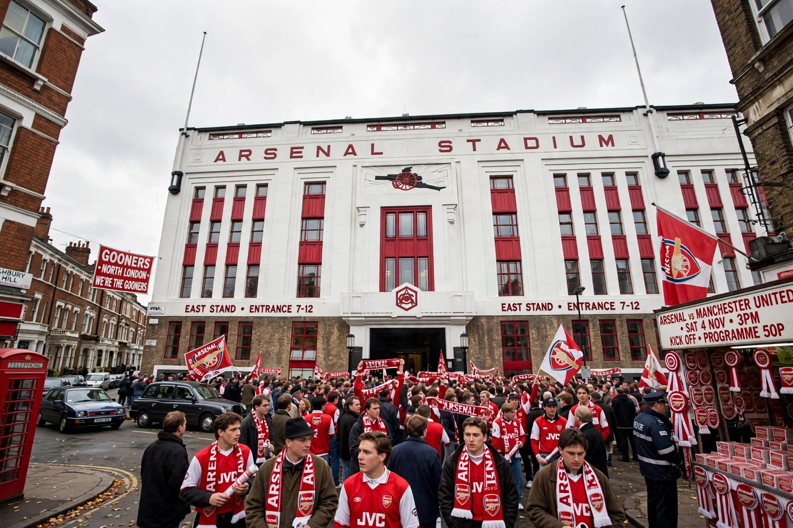

Arsenal Stadium, popularly known as Highbury, was a football stadium in Highbury, London, home of Arsenal F.C. from 1913 to 2006. Famous for its Art Deco East and West Stands and its marble halls, it was redeveloped into housing after the club moved to the Emirates Stadium.

| Arsenal Stadium (Highbury) | |
|---|---|
| Location | Highbury, London, England |
| Opened | 6 September 1913 |
| Closed | 2006 |
| Capacity | 38,419 at closure; record attendance 73,295 (1935) |
| Tenants | Arsenal F.C. 1913–2006 |
Arsenal, then Woolwich Arsenal, moved from Plumstead to Highbury in 1913 under chairman Henry Norris, leasing land from St John's College of Divinity. Architect Archibald Leitch designed the original stadium. Under Herbert Chapman the ground was transformed in the 1930s with the Art Deco West (1932) and East (1936) Stands. The North Bank and Clock End were rebuilt in the 1990s after the Taylor Report, making it all-seated.
The last match was a 4–2 win over Wigan Athletic on 7 May 2006, with a hat-trick by Thierry Henry. The site became Highbury Square apartments, preserving the listed East and West Stand facades and the pitch as a communal garden.